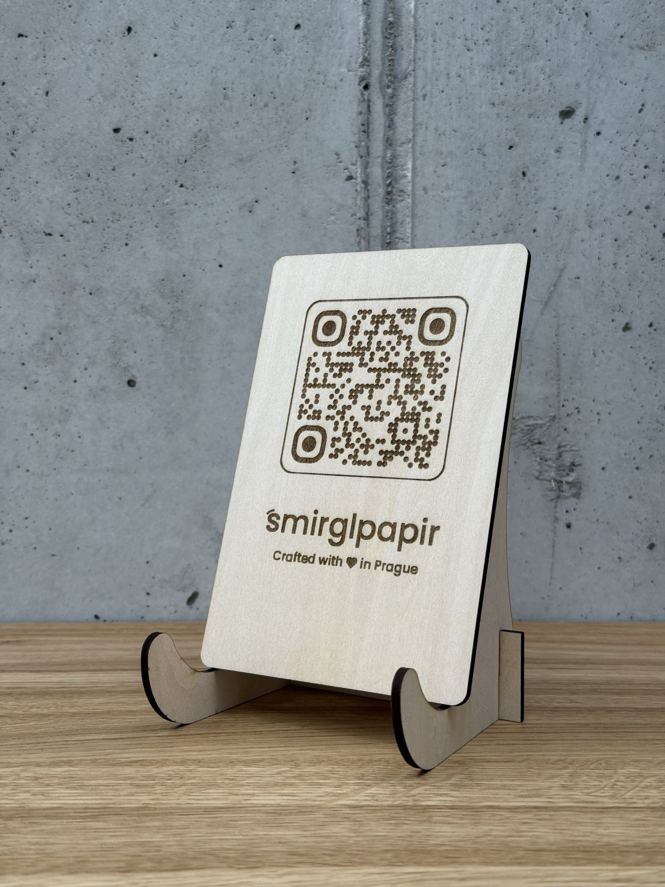
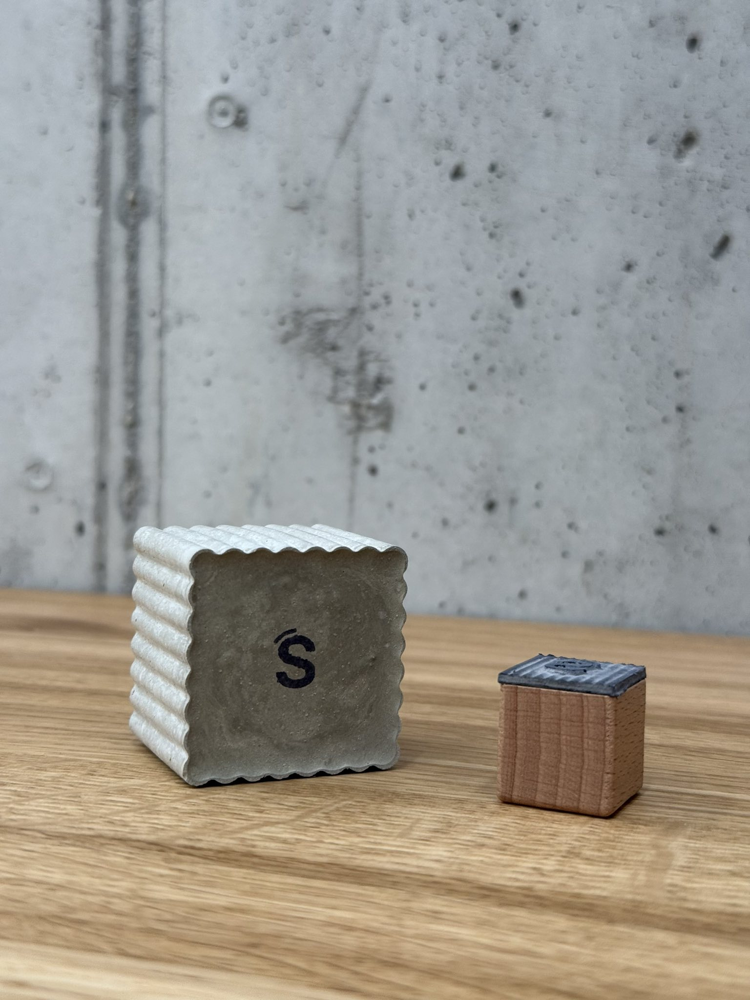
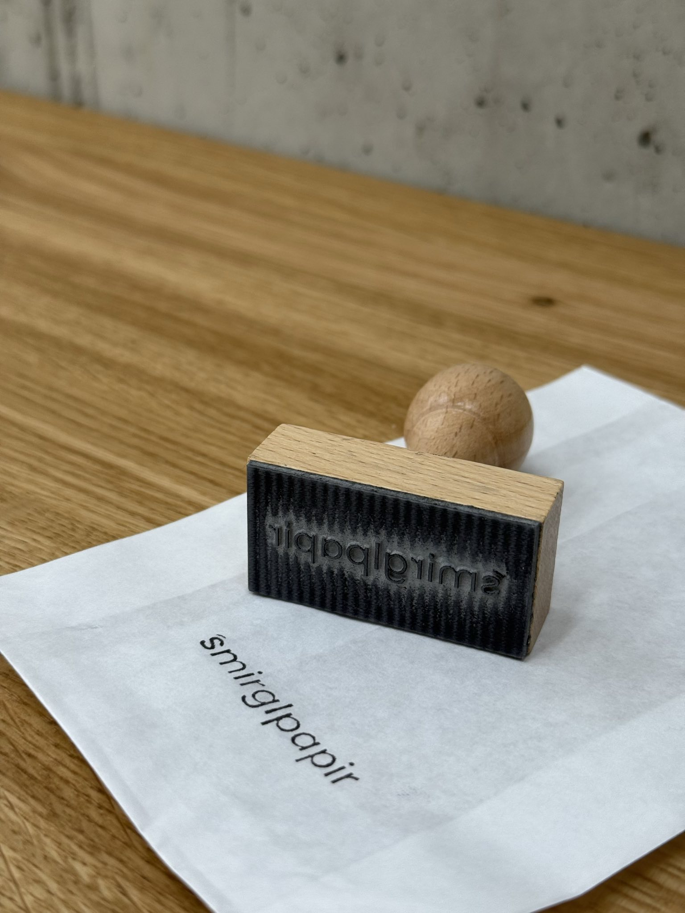

Branding-Set für smirglpapir
Ein kleines Branding-Set für einen klaren Marktauftritt — aus Prag, mit Liebe gemacht.



Das Projekt
Oft braucht es für einen Marktauftritt nur ein paar sorgfältig gewählte Elemente, damit alles stimmig wirkt und Menschen sich schnell orientieren können. Für das Label smirglpapir aus Prag habe ich deshalb ein kleines Branding-Set gestaltet, das meine Schwägerin bei ihrer Arbeit vor Ort zuverlässig unterstützt.
Im Set sind drei Dinge, die sie nutzen kann: ein Logostempel für Verpackungen und Karten, ein kleiner Stempel für feine Details und ein graviertes Holzschild mit QR-Code, das ihre wichtigsten Kanäle bündelt und am Stand gut sichtbar ist.
Alle Teile greifen den klaren, handgemachten Stil ihrer Marke auf. Sie sollen nicht nur hübsch aussehen, sondern ihren Arbeitsalltag vereinfachen und ihre Präsenz nach außen stärken.
Details
Material: Birkenholz · Technik: Lasergravur · Verwendung: Ladentheke & Marktstand
Du hast ein kleines Business und brauchst ein individuelles Branding-Element?
Ähnliches Projekt anfragen →